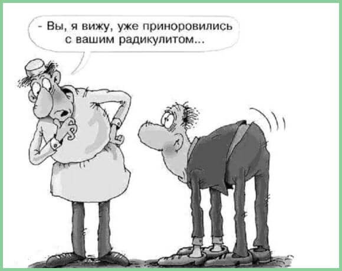
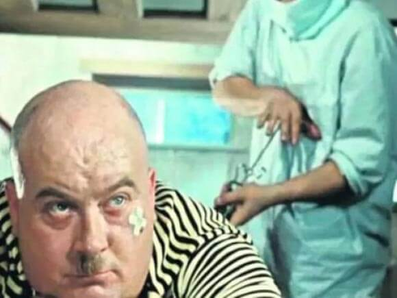
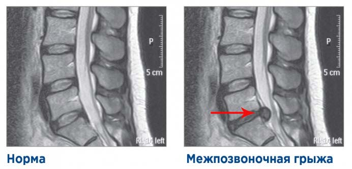
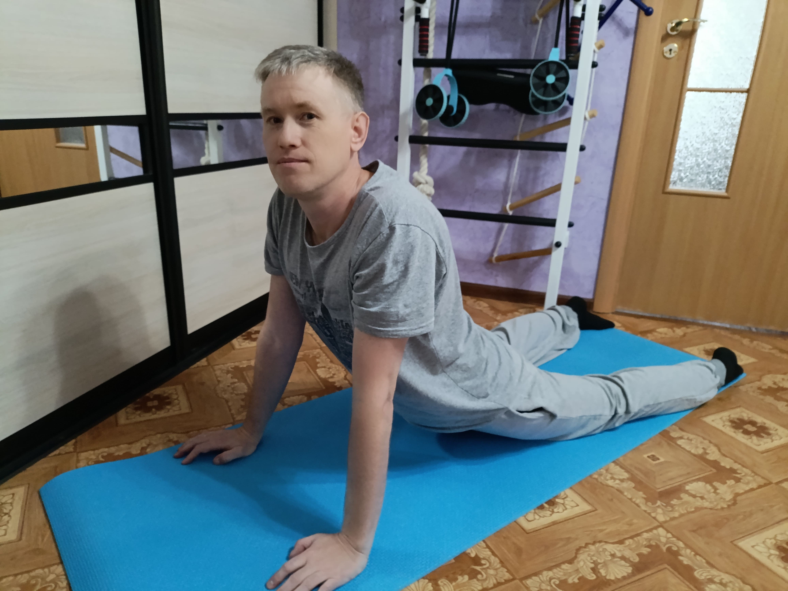

Как я боролся с грыжей
и чуть не стал инвалидом
Первые боли внизу живота и в пояснице начались ещё в 2013 году после переезда в другую квартиру. Пока я двигался в течение дня, поясница не беспокоила. Но вставая утром с постели, боль в пояснице была такая, будто ножом изнутри режет.
В мыслях не было, что при переезде, перенося тяжёлый холодильник и стиральную машину, я зарабатывал себе грыжу.
Днём и вечером боль немного отходила, и я забывал про неё. Вечером ложился нормально, а на следующее утро не мог согнуться. Даже поднять полугодовалого сына было проблемой.
Прошло какое-то время, недуг потихоньку отпустил, и я не придал этим симптомам большого значения. Следующие три года я время от времени испытывал неприятные ощущения в паху — уже начал беспокоиться, что у меня проблемы по мужской части.
Весной 2016 года почувствовал осложнения: не мог без боли сидеть долгое время, а при ходьбе постоянно ломило поясницу.
Супруга полгода уговаривала меня сходить в больницу провериться, а я всё отнекивался — терпеть не могу эти больницы. Спина начала часто отказывать. Я, как старый дед, не мог стоять без боли и передвигался, опираясь на стены. Из-за этого не мог принимать заявки по ремонту и настройке компьютеров и терял доход.
В интернете часто искал информацию, что же со спиной случилось. Все симптомы говорили: у меня межпозвоночная грыжа. Я до последнего не верил, утешал себя, что просто сорвал спину и скоро всё пройдёт. Ага, наивный, пройдёт само, как же…

Межпозвоночная грыжа не появляется и не исчезает за один день. Она формируется месяцами и годами от неправильного образа жизни. Для позвоночника полезно постоянное движение, мышцы спины должны быть крепкими, чтобы поддерживать позвоночник. В конце концов я согласился на уговоры жены и пошёл на обследование.
Пошли в понедельник в ЦРБ, а очереди — как обычно, не пробиться. Передвигался я с трудом, поэтому жена сопровождала меня повсюду. Спасибо ей большое — если бы не она, я бы в больницу не пошёл. И правильно бы сделал. Почему правильно? Читайте дальше — там всё самое интересное.
Пока сидел в очереди к терапевту и невропатологу, увидел на стене плакат с причинами болезней позвоночника: пассивный сидячий образ жизни, когда мышцы спины атрофируются и слабеют; подъём больших тяжестей; неправильное питание — недостаток витаминов и кальция. Все три причины были про меня.
Кое-как отсидел часа два к терапевту. Говорю: так и так, в пояснице боли, стопа правой ноги немеет через 2–3 минуты, когда стою. Меня послушали аппаратом, замерили давление — всё в норме. Выписали направление на анализы и таблетки, названия не помню — я уколы терпеть не могу.
Спрашивает: «МРТ делать будешь?» Я: «Конечно буду — для этого и пришёл в больницу: выяснить причину боли, а потом лечить». Большинство людей делают наоборот — сначала лечат, а потом выясняют, что лечили не от того.
Выдала бланк-направление со схемой проезда, где делают МРТ, и отправила восвояси. Ни диагноза, ни метода лечения — глотай таблетки и дальше гробь себя. Такое осталось впечатление.
На следующий день сдаю кровь и мочу, захожу к невропатологу. Описываю: поясницу режет, правая нога отваливается. Он прописывает уколы мелоксикам. Спрашиваю: «А что со мной, какой диагноз?» — «Сделаешь 6 уколов, придёшь на повторный приём, там и посмотрим». Офигеваю во второй раз.
Но куда деваться — спина болит. Поверил врачу (врач — от слова «врать», как я потом где-то прочитал), купил 6 уколов и начал делать по одному в день в правую булку.
Сделал 3 укола, дальше выходные, ещё 3 — на следующей неделе.

После укола вроде отпускало, боль утихала. В воскресенье ныло весь день. А в понедельник утром я не смог встать с постели. Беда случилась со мной 21 марта 2016 года.
Говорят, понедельник — день тяжёлый. Но настолько тяжёлым он ещё не был. Я проснулся с дикой болью в пояснице. С трудом сел на край кровати и полчаса пытался самостоятельно надеть носки. В этот момент я почувствовал себя беспомощным овощем.
Не мог ни сидеть, ни стоять без поддержки. Более-менее чувствовал себя только лёжа, и то при смене положения тела испытывал дикие боли. Не пожелаю такого никому, даже заклятому врагу.
Я начал проклинать врачей: обратишься к ним, а они и сказать, в чём проблема, не могут или не хотят. Калечат, а не лечат. Сам виноват — довёл себя до такого состояния. А мне на тот момент исполнилось всего 35 лет. И гробил я себя на протяжении 3–5 лет, с тех пор как сменил род деятельности и образ жизни.
Тут супруга вспомнила, что у её знакомой тоже были проблемы со спиной — и ей помог один специалист. Взяли телефон Семёна Петровича, договорились о встрече. Ехать нужно было в соседний город, за 40 километров. Выпил обезболивающее, чтобы дорогу выдержать; за руль сам не сел — попросил друга Серёгу свозить, спасибо ему большое.
Семён Петрович принимал у себя дома. После моих симптомов — поясницу режет, правая нога немеет в стопе, когда стою — он сразу озвучил: «У тебя, дорогой мой друг, грыжа. Но для точного диагноза нужно МРТ. А так — все симптомы межпозвоночной грыжи».
Я был в шоке. Как я боялся это услышать и всё надеялся, что МРТ не покажет грыжу. Поехали делать снимок поясницы — отдал за процедуру 2400 рублей (это в 2016 году).
На следующий день Семён Петрович берёт мой снимок, подходит к окну и, не читая описание, точь-в-точь говорит то, что написано в эпикризе у меня в руках: грыжа Шморля — она почти у всех бывает и болей не вызывает, а вот грыжа L5-S1 со смещением вправо, из-за которой отнимается правая нога, — это уже серьёзно.
Просит подойти, показывает пальцем — чтобы я сам всё увидел и осознал, а не верил на слово, как врачам в больнице.

Спрашивает, какой размер грыжи L5-S1 написан — 0,5–0,8 мм? Смотрю в эпикриз и вижу: 1,0 см. Он берёт описание, не веря глазам: грыжа 1,0 см. Смотрит на меня, потом в описание и говорит: «Если бы я видел только снимок с описанием, без пациента, — назначил бы однозначно операцию по вырезанию грыжи».
Всех умных слов не помню. Запомнил: обычно до 0,8 см грыжа не критична и можно обойтись без операции, а больше 0,8 см — опасна тем, что может парализовать ноги, и останешься инвалидом на всю жизнь.
Я отказался от операции и начал искать. Три года ушли на поиск истины. Перечитал сотни статей, пересмотрел сотни видео, пробовал упражнения, диеты, растяжки. Что-то помогало на чуть-чуть. Что-то делало только хуже — как гиперэкстензия, после которой правую ногу резало так, что я не мог простоять и минуты.
Начитавшись отзывов в интернете, пришёл к выводу: большинство тратят деньги на массажи, растягивания и процедуры, а в итоге становится только хуже. Сотни тысяч рублей — впустую.
Не буду врать — были рецидивы, боли возвращались, я списывал их на погоду. Перед морозами поясницу ломило, но дня 2–3 — и проходило. Так было до февраля 2018 года. Тогда спину прихватило с отдачей в правую ягодицу. Спина прошла недели за две, а ягодица не давала покоя ещё месяца 3–4, до самого лета.
При ходьбе или когда поднимал правую ногу лёжа, я чувствовал тянущую боль от поясницы и чуть ниже таза. Думал, внутри зажимает нерв. Пытался разобраться, почему. Собирал информацию по крупицам в общий пазл.
И в 2019 году я нашёл то, что искал.
Оказалось, все вокруг лечат следствие. Грыжа — это не причина боли. Причина — в другом. Грыжа сама по себе не болит, и не её надо лечить.
Когда я начал всё делать правильно по методу — через 2 месяца я шёл по улице и вдруг понял: нога больше не болит. Я настолько привык хромать, что не сразу это заметил.
Сейчас мне 45. Я поднимаюсь на пятый этаж без остановки. Приседаю, отжимаюсь, поднимаю 20–30 кг. Сбросил 13 кг лишнего веса. Живу без ограничений.

Если вы тоже:
- просыпаетесь с болью и не можете нормально встать;
- хромаете или чувствуете, как «стреляет» в ногу;
- уже делали уколы или даже операцию — но боль вернулась;
- боитесь стать инвалидом или навсегда потерять подвижность —
тогда я знаю, где именно вы сейчас находитесь. Потому что я там был.
И у меня есть метод, который работает. Я проверил его на себе, потом рассказал троим знакомым — у всех троих боль ушла или значительно снизилась.